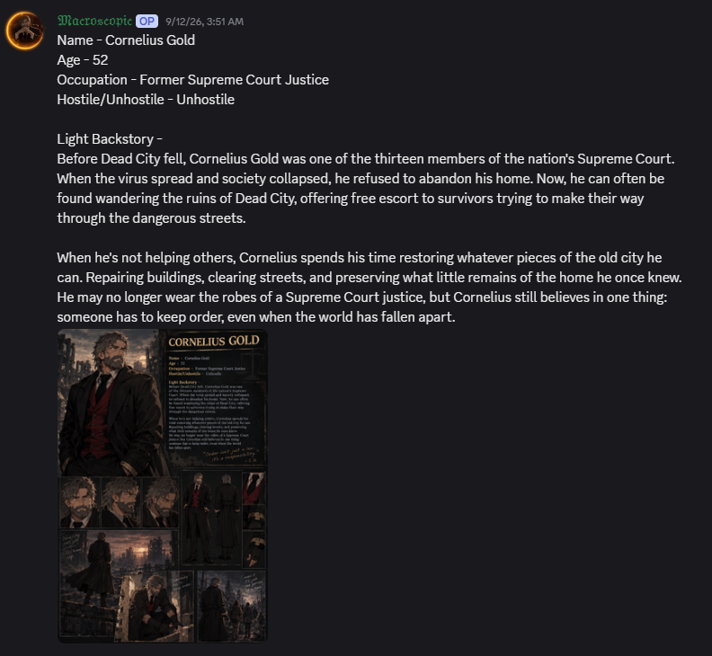

[ GROUND ZERO DATABASE ]
CHARACTER DATABASE
Survivor records and roleplay identities. Cornelius Gold appears first as requested.

AGE: 52OCCUPATION: Former Supreme Court JusticeSTATUS: Unhostile
CORNELIUS GOLD
Before Dead City fell, Cornelius Gold was one of the thirteen members of the nation’s Supreme Court. When the virus spread and society collapsed, he refused to abandon his home. Now, he can often be found wandering the ruins of Dead City, offering free escort to survivors trying to make their way through the dangerous streets.
When he’s not helping others, Cornelius spends his time restoring whatever pieces of the old city he can. Repairing buildings, clearing streets, and preserving what little remains of the home he once knew. He may no longer wear the robes of a Supreme Court justice, but Cornelius still believes in one thing: someone has to keep order, even when the world has fallen apart.
AGE: Unknown — appearance indicates early 20sOCCUPATION: Religious LeaderSTATUS: Unhostile
HESTIA
“The Hearth” started increasing in popularity in the time prior to the undead rising. With rumors of disaster, and a promise of salvation, many were drawn to the collective.
Each and every member swears an oath of true nonviolence, and under the instruction of their leader, they are able to live truly peaceful and fulfilling lives in this trying time.
The overall structure is relatively simple, there is no true leader, it is simply a home, one large family overseen by their god. In exchange for participation, you gain protection, and a greater purpose.
AGE: 25OCCUPATION: Marine / Enforcer / BodyguardSTATUS: Can be hostile and stern
JACE SENTRY aka MAJOR SENTRY
Before the world ended, Major Jace Sentry was a Marine known for his strict discipline, cold demeanor, and ability to keep his people alive under pressure. He wasn’t the kind of officer who gave long speeches or tried to be everyone’s friend. He gave orders, expected them to be followed, and made sure his Marines came home alive. After years of dangerous operations, Jace became an expert at reading threats, surviving under pressure, and doing whatever was necessary to protect his people.
After the fall, he still had his training, his weapons, and the instincts of a Marine. He began working as an enforcer and bodyguard, taking jobs from settlements, traders, and survivors who could afford his protection.
Jace guards people traveling through dangerous territory, protects important supplies, and enforces agreements between groups. Sometimes his job is escorting a merchant through an infected city. Other times, it’s protecting a settlement leader from raiders or rival factions.
Jace has a reputation for being harsh, intimidating, and nearly impossible to negotiate with. He speaks in short, direct sentences and doesn’t tolerate disrespect, pointless arguments, or people who put others at risk. Most people who hire him don’t ask questions about his past. They just know that if Jace Sentry is standing beside them, getting to them won’t be easy.
To most survivors, Major Jace Sentry is a cold, hostile man who will do whatever it takes to survive. To the few who earn his trust, he’s a protector who will stand in front of a threat and refuse to move.
Even if it gets him killed.
AGE: 18OCCUPATION: SurvivorSTATUS: Hostile
COOKIE
Growing up, I was surrounded by friends and family and was loved by all but ever since the city became ruins, I lost everyone I loved. I've seen people still be with their loved ones, I've seen them all survive while I lost everything.
Why can they be happy while I can't? Why me?
...
If I can't have what I want, then no one can.
I want people to feel my pain, I want chaos.
Everyone will suffer just like I did.
AGE: 22OCCUPATION: Musician / Story WriterSTATUS: Hostile
DIEGO ABBOTT
4–12 Years Old
Everything was fine until Abbott's father became violent...
18 years ago, Abbott was 4 years old. He and his family were living peacefully, but one day, Abbott's mother died in a car accident. His father fell into alcoholism to cope with the pain of losing his wife. For the next 8 years, Abbott's life was well. His dad never stopped drinking, and each day, he became more and more violent. Things kept getting worse until the day Abbott's brother decided that it was time for them to leave.
16–19 Years Old
At around 16, I discovered my passion for music. I started playing the electric guitar. I wasn't very good at first, but I never gave up. My brother was always there to encourage me.
Every day after school, I would practice. I also joined a school band that played Death Metal. That's how I discovered that I really enjoyed the genre.
I also enjoyed writing stories because it allowed me to express my feelings and bring the things I imagined to life.
On the day I turned 19, my brother came to me and asked if I wanted to create our own band with him. I was really surprised because I had never realized that he was as passionate about music as I was.
Of course, I said yes.
I don't know how or why, but somehow the band's name ended up being Kataclysm. Yeah... anyways, I didn't really care. I was just happy to be making music with my brother.
20–22 Years Old
It had only been one year since we released our first album, and it was doing SO WELL.
6,735,000 copies sold, and we were playing on radio stations all around the world.
Even with all of that success, I eventually started consuming illegal substances. I don't really remember what caused me to start, but I deeply regret it.
Because of my addiction, my performances on stage became worse and worse every time I played. My brother noticed that something was wrong and eventually asked me what was happening.
I simply told him that I wasn't feeling well. I never told him about my substance abuse problem.
I am now turning 21 years old, and our world is starting to pour in four months. I am so hyped.
AGE: 23OCCUPATION: GamblerSTATUS: Hostile
K1LLER
Often found in the casino before the world fell, I would always be in the casino gambling my life away, at the end of each day I would go home poorer than a brick. Right before the world fell into deep sh*t I had won big, 752 million which I had traded in for gold, diamonds, and emeralds, and relics, I was rich, but with nowhere to spend any of my riches I was just sitting there in my own wealth. After the world had fallen I decided to live in Dead City as it now known, in a floating cathedral had purchased right before the owner passed. The previous owner had left a message ‘Find out what caused Dead City, and fix it, find Cornelius Gold, he will help you, I believe in you K1ller’ with no other leads and no confirmation of its authenticity, I decided to follow it. I didnt understand how he knew my name I never told him my name. With this information I had a mission for the first time in my life, a purpose. To find Cornelius Gold and fix what was started.
The breakout which I had started calling U, had started to ‘warp reality’ and I don't understand fully how as im still researching U. More and more islands kept arising and connecting to my platform. I traded for goods and people to make my empty islands into farms and storage.
The previous owner who I had started calling Z, was somehow part of this and I knew it once I found pictures and files labelled ‘top secret’. After I had looked through them I understood that it was an outbreak of U and I finally understood how he knew, he was part of it, but why did I need to stop it, a solo man, I specifically needed to find it, I dont know how he knew my name before I was even here but somehow he was watching me. I didnt know how Z knew so much, i kept finding pages and pictures everywhere. I was going insane, I didnt understand why I needed Cornelius or why any of this was happening, I didnt even know who Cornelius was, or how he had known Z. Seeing how smart Z was and how he had predicted me perfectly I knew my journey had to start soon.
A man by the name of Saff was one of my leads on Cornelius and I had started exploring the Dead City, when I had found him we had some food and water. I had asked about Cornelius, but to no avail; I then asked more questions about Z and the U virus. The moment I mentioned the U Virus, he fell strangely quiet. That only made me more curious, so I kept pressing him for answers. He kept saying under his breath ‘Im the stickiest ricle’ like it was something he didnt wanna forget, whatever that meant. He kept spouting nonsense so I had just went on my way to another place in my search. I didnt wanna spend anymore resources than I needed to on that ‘last’ fight...
AGE: 18OCCUPATION: Survival GuideSTATUS: Unhostile
SAFFRON Z. RICE
To my mother, I'm sorry for not always doing what you expected of me. And to not caring about the books you so very loved before “It” happened.
To my father, I'm sorry for not being the man you showed me how to be. And to not taking care of you as a son should.
And to any readers that are listening to my story. I'm either dead or reborn as them.
I hate myself.
I despise myself for leaving them... God, I miss hearing their voices. I never hugged them, I wasn't big on hugs. But hearing them; that soothed my defective heart. I miss them so damn much, I can't breathe without them, I can't even manage to have a single f$%king thought without their reminders in my head. Sometimes I think I can move on, but it just keeps coming back to me.
All cause of that sh$tty U virus. It ruined my family, ruined the world... on the off chance I'm alive, find me in Dead City. But don't come asking about the stupid virus, some K1ller lady told me about it when she was scavenging Dead City for some “guy.” She kept saying “No, I have the most kills!” while she was reading “some” documents; Like there was another person in the room, other than me... Anyways, I'm not trying to go through another “petty” fight, I'm through on resources cause of her.
AGE: 34OCCUPATION: “Businessman”STATUS: Prefers to keep hostility to a minimum
DON ANDREW
As a child, the Don's grandfather, the godfather of the Sicilian mob at the time, was a very powerful man with a lot of enemies. Andrew's father never much cared for the business, but for some reason it always fit Andrew perfectly. As a kid there was even one day that Andrew refused to go to school, even picked a fight with his father about it for no reason and after ten minutes of bickering the car violently exploded. Andrew always could tell when something was off, and it benefited his grandfather greatly as he could worry less about his family and more about his enemies.
When Andrew grew up, he took over the family business and immediately began to plot revenge on behalf of his grandfather who loved very dearly. Sadly though his grandfather would pass of old age and his funeral was held that cold winter. During the funeral, when Don Andrew had an alibi, he executed his plan and had all the other crime families wiped out that night. From that day forth Don Andrew made sure that his city would be one where his kids could live in peace. At least they could until the apocalypse happened...
AGE: 18OCCUPATION: ExplorerSTATUS: Hostile
REN
When I was young his dad always told me that there was a beautiful city waiting for me. My dad would always talk about that city as if it was the only one to exist. Because we were not living close to the city we could not know a lot about that city except rumors from random people. Me and my dad were hunters, we hunted animals just to survive. We had to fight to survive. When I was 15 my dad passed away, on his dying bed he said that his dream was for me to go to that city. He told me that the city has everything I could ever asked for. If I lived there then I didn't have to live here in poverty, trying to survive day after day. He wanted me to have a better life.
When I became 18, I resolved myself to visit the city. The dream that my dad had I will fulfill it. I will live in the city and finally have the life that my dad has always wanted for me. After weeks of travelling I finally found it. I found the city. I could finally have another chance, live another life. I was so excited to finally be here after all this time. I was so tired of all my travels but because I was so excited that I didn't feel that I was tired. I went around the whole city, I roamed every street. I saw every shop that were in the city. It was getting very dark, it was getting late, I needed a place to sleep. I went around and asked some houses if I could maybe sleep the night since I had nowhere to go. I was not surprised to hear that nobody wanted a stranger to sleep in their house. So after getting rejected by a bunch of people, I didn't know what to do. I found a bench and I sat on it. I was thinking about what I could do, since nobody wanted to give me a place for the night. I decided to sleep on the bench. I was so tired that I passed out.